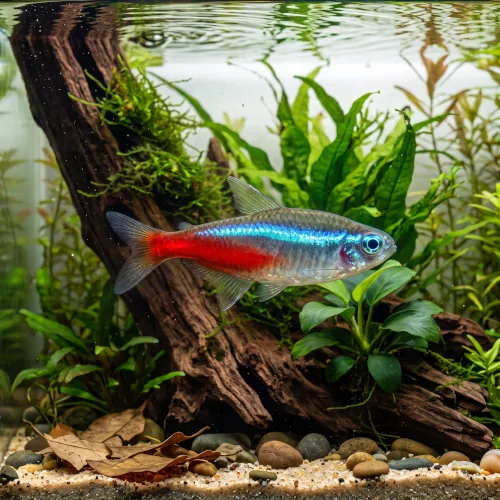

Nome popular principal
Tetra Neon Innesi
Tetra Neon, Neon Verdadeiro, Neon Innesi, Neon Tetra
Ficha de peixe
Tetras e Caracídeos
O clássico ícone do aquarismo comunitário, cujas cores cintilantes azuis e vermelhas se destacam majestosamente em aquários plantados.

Nome popular principal
Tetra Neon, Neon Verdadeiro, Neon Innesi, Neon Tetra
Nome científico
Nome técnico essencial para taxonomia, cruzamento de manejo e referência editorial consistente.
Dificuldade de manejo
Use este nível como referência inicial, sempre considerando volume, estabilidade e compatibilidade do aquário.
Seção 1
Seção 2
Seções 4 a 6
Tetra Neon Innesi tem hábito alimentar onívoro. Excelente. 1 a 2 vezes ao dia. Aceita com facilidade rações em flocos e micro-grânulos, beneficiando-se da suplementação regular com náuplios de artêmia e dáfnias.
Fêmeas adultas são mais roliças e possuem a faixa azul ligeiramente curvada devido ao abdômen volumoso; machos são mais esguios e têm a faixa azul reta. Tipo de reprodução: Ovíparo. Dificuldade de reprodução: Avançado. A reprodução é exigente, necessitando de água muito mole, PH bastante ácido e ambiente praticamente na escuridão total para a eclosão dos ovos.
Alta. Substrato recomendado: Substrato escuro ou areia fina de rio. Necessidade de esconderijos: Média. Destaca todo o seu brilho cintilante quando mantido em aquários com iluminação moderada, plantas abundantes e substrato escuro.
Seção 7
Atinge até 4 cm de comprimento e desenvolve-se melhor em águas com temperatura mantida entre 20°C e 26°C.
Seção 8
No Tetra Neon (Innesi), a faixa vermelha cobre apenas a metade posterior do corpo (do meio até a cauda), enquanto no Cardinal o vermelho cobre toda a extensão inferior.
Sim, é fundamental manter um grupo mínimo de 8 a 10 indivíduos para evitar estresse e incentivar o comportamento natural.
O Neon Innesi prefere água um pouco mais fresca que o Cardinal, idealmente mantida entre 20°C e 26°C.